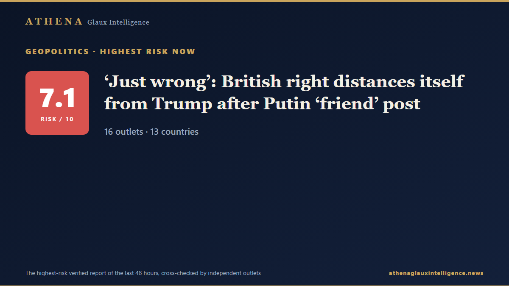

Κίνδυνος 7.1Αυξημένος
ATHENA Glaux Intelligence — Παγκόσμια ειδησεογραφική ανάλυση — κάθε αριθμός εξηγημένος
Γεωπολιτική
Όλη η Γεωπολιτική >Υψηλότερος κίνδυνος τώρα

Αυξανόμενος κίνδυνοςΑύξηση τις τελευταίες 24 ώρες
- Drones hit homes in Sudan capital Khartoum and a UN building, army blames EthiopiaΚίνδυνος 0.0 → 5.4
- 'We maintain stringent quality controls': Bisleri responds after FSSAI finds water unsafeΚίνδυνος 0.0 → 3.9
- Six people killed as Russian attack destroys five-storey apartment building near KyivΚίνδυνος 2.5 → 6.2
Ναυτιλία & ναυσιπλοϊα
Γραφείο Ναυτιλίας >Υψηλότερος κίνδυνος τώρα
Κίνδυνος 7.6Αυξημένος
Endurance athlete swims in Strait of Hormuz to highlight Iran war's impact on wildlife
Δείτε τα στοιχεία ›
Πίνακας παρακολούθησηςΠεράσματα, λιμάνια και άλλες ναυτιλιακές αναφορές
- Strait of HormuzΔιαταραχήattack / strike · risk 7.6 · 22 newsrooms (72 h)
- Danish Straits / BalticΔιαταραχήattack / strike · risk 7.4 · 125 newsrooms (72 h)
- Bab el-Mandeb / Red SeaΔιαταραχήattack / strike · risk 7.4 · 125 newsrooms (72 h)
Κάθε είδηση, ελεγμένη σε πολλές χώρες.
Το ATHENA Glaux παρακολουθεί 633 ειδησεογραφικά μέσα σε όλο τον κόσμο. Μια είδηση γίνεται επαληθευμένο γεγονός μόνο όταν την αναφέρουν ανεξάρτητα μέσα. Κάθε γεγονός δείχνει ποιος το ανέφερε πρώτος και έναν βαθμό κινδύνου με τους λόγους του.
1.271γεγονότα σε 24 ώρες
633μέσα που παρακολουθούμε
35λεπτά ανάμεσα στις ενημερώσεις
Σεισμός ή πλημμύρα κοντά σας αυτή την εβδομάδα;
Γράψτε την πόλη σας και δείτε σεισμούς, πλημμύρες, καταιγίδες και επίσημες προειδοποιήσεις κοντά της, με λίστα κιτ έκτακτης ανάγκης 72 ωρών. Δωρεάν, χωρίς εγγραφή, και η περιοχή σας μένει στη συσκευή σας.
Αναφορές έρχονται από ανεξάρτητα μέσα — όταν δύο συναντηθούν στην ίδια ιστορία, γίνεται επιβεβαιωμένο γεγονός.
Πώς ελέγχει το ATHENA μια είδηση
- ΣυλλογήΟι αναφορές φτάνουν από ανεξάρτητα μέσα σε πολλές χώρες.
- ΑντιστοίχισηΌταν δύο μέσα συναντιούνται στην ίδια είδηση, γίνεται επαληθευμένο γεγονός.
- ΕξήγησηΚάθε γεγονός δείχνει ποιος ήταν πρώτος, πόσο εξαπλώθηκε και γιατί ο κίνδυνος είναι αυτός.
 Γεωπολιτική
ΓεωπολιτικήLibya reports drone attack on Russian ship in Benghazi
Authorities in divided Libya's east have reported a second ship was hit in a drone attack off Benghazi, hours after a Russian vessel was targeted at the city's port. από RTÉ News (World)
7.5Σημασία
7.0Κίνδυνος · υψηλός
87%Βεβαιότητα
Οι τίτλοι των ειδήσεων παρουσιάζονται στα αγγλικά, όπως δημοσιεύτηκαν.
Ενέργεια & Περιβάλλον
EU officials reject Cop31 deal as it 'doesn't speak to reality of the climate crisis' – video
The Cop31 climate talks fell into disarray as the EU, UK and allies in the developing world rejected what they called an unacceptable deal on the future of the climate. από Guardian Environment
Ενέργεια & Περιβάλλον
EU objects to Cop31 draft deal over failure to mention fossil fuels
Bangladeshi climate advocates welcome key proposals but warn that delivery will depend on public grants, clear timelines and firm obligations for developed countries. από The Business Standard (Bangladesh) (working feed)
Χορηγούμενο
Cybernetics and Artificial Intelligence Lab Welcome to the Cybernetics and Artificial Intelligence Laboratory, established at the Department of Business Administration of the National and Kapodistrian University of Athens. The lab is headed by Professor Dimitrios Thomakos. The lab aims to do research that can be published in top venues. Our research uses tools and methods of Artificial Intelligence, and lies in the following areas: - Forecasting - Decision making - Cyber security - Finance We are always looking forward to collaborating with exceptional students!
Μάθετε περισσότερα – Cybernetics and Artificial Intelligence LabΠλοία στα θαλάσσια περάσματα τώρα
Ζωντανές μετρήσεις AIS. Πατήστε ή περάστε πάνω από μια μπάρα για λεπτομέρειες.
Τελευταίες αναφορές
Retail sales volumes jump 2.2%, biggest rise since December 2021
US intelligence chief predicts more tech outages as systems undergo upgrades
Korea asks Qatar to prioritize LNG supplies once production, shipping normalize
Colombian Government Asks X to Suspend Former President Gustavo Petro’s Account
OpenAI chief scientist urges industry limits on AI development
Trump to welcome investors at gala for his plunging meme coin
In Istanbul, thousands protest closure of pro-opposition Turkish media outlets
US envoy Kushner explains when Trump would approve Article 5-style security guarantees for Ukraine
Τεχνολογία & Κυβερνοασφάλεια
FBI reportedly investigating apparent hack of its criminal database
The National Crime Information Center database is used by federal and local law enforcement to share information. από BBC News
Γεωπολιτική
(LEAD) Seoul shares open over 2 pct lower amid AI fears
SEOUL, Nov. 23 (Yonhap) -- South Korean stocks opened more than 2 percent lower ... από Yonhap (English)
Τεχνολογία & Κυβερνοασφάλεια
Countries agree to work toward ‘killer robots’ pact
GENEVA, Nov 20 - UN talks on rules for autonomous weapons headed into overtime on Friday with some nations including Russia dragging their feet and negotiators considering a non-binding deal on arms… από The Straits Times
Γεωπολιτική, Πολιτική & Ασφάλεια
Περισσότερα ›Διπλωματία & σύνοδοι
Netanyahu, Eisenkot parties end talks without deal on forming Israel govt
The parties of caretaker Israeli prime minister Benjamin Netanyahu and his rival Gadi Eisenkot concluded a new round of talks on Sunday without reaching an agreement on a possible coalition… από Al-Monitor
- Πόλεμοι & συγκρούσεις
Ukraine says Russian strikes kill 12 in Kyiv region
- Εκλογές & πολιτική
US Democrats clinch a historic House majority of at least 258 seats, the largest since 1992
- Εκλογές & πολιτική
With US midterms underway, courts rebuff Trump's pressure on state election officials
- Εκλογές & πολιτική
Trump on ’60 Minutes’ Reflects on Midterm Loss, Death and Forgiveness: ‘I Do Hate Some of My Enemies’
Οικονομία, Χρηματοοικονομικά & Αγορές
Περισσότερα ›Μετοχές, ομόλογα & αγορές
SK Hynix to become Kioxia's top shareholder with bond conversion
Korean chip giant SK hynix Inc. is considering converting convertible bonds (CBs) linked to its investment in Kioxia Corp., a Japanese NAND flash memory maker, into shares, industry sources said… από The Korea Times
- Τράπεζες & πίστη
How ‘GTA VI’ surpassed all expectations
- Πληθωρισμός & επιτόκια
Silver Price Forecast: XAG/USD holds opening gains as Fed bigger rate hike prospects wane
- Προβλέψεις & κίνδυνος ύφεσης
UAE weather: Red alert issued for fog; temperatures to dip to 18ºC in some areas
- Πληθωρισμός & επιτόκια
Gold rebounds as traders pare bets on near-term Fed rate hikes
Εμπόριο, Βιομηχανία & Υποδομές
Περισσότερα ›Κρίσιμες υποδομές
US intelligence chief warns of further technology disruptions amid system upgrades
Jay Clayton says ‘there will be bumps on the road’ as infrastructure upgrades roll out across US. από Anadolu Agency (English)
- Εφοδιαστικές αλυσίδες
Iran to start rolling power cuts Sunday
- Αερομεταφορές, σιδηρόδρομος & οδικές
Delta system outage delays 1,300+ US flights
- Μεταποίηση
Tata Steel to acquire 26.6% stake in APL Apollo for ₹15,510 crore
- Εφοδιαστικές αλυσίδες
Eimskip in Iceland orders its third Konecranes Gottwald ESP.8 Mobile Harbor Crane
Ενέργεια, Πόροι & Περιβάλλον
Περισσότερα ›Νερό & φυσικοί πόροι
Chow Kon Yeow rebuts Lim Guan Eng’s RM210m claim, says Penang won’t pay for undelivered water
GEORGE TOWN, Nov 22 — Penang is not required to make any payments to Perak before water supply under the Bulk Water Supp... από Malay Mail
- Κλίμα & κλιματική πολιτική
COP31 fails to reach consensus on Antalya Pact
- Νερό & φυσικοί πόροι
Otters offer hope for Klang River's recovery
- Πυρηνική ενέργεια
LR approves new Rules for nuclear-powered ships and offshore units
- Ηλεκτρική ενέργεια
Around 50 settlements in Rivne Oblast left without power following Russian attack
Τεχνολογία, ΤΝ & Κυβερνοασφάλεια
Περισσότερα ›Επεξεργαστές & υπολογιστική
US seeks answers on Nvidia’s sale of chips to China: Bessent
He said the chipmaker’s board of directors is working to determine what had happened. από The Business Times
- Τεχνητή νοημοσύνη
Exclusive-Like SpaceX, Anthropic ran an unusual IPO process, chafing some bankers
- ΜΜΕ & παραπληροφόρηση
Landmine blast kills 5 children in northwest Syria: state media
- Διάστημα & δορυφόροι
2 probes enter orbit around Mercury on Japan-Europe joint mission
- Διάστημα & δορυφόροι
Honda to launch new hybrid Avancier SUV in Japan after debut in Thailand
Επιχειρήσεις, Εταιρείες & Επενδύσεις
Περισσότερα ›Επενδύσεις
Red tape delaying foreign investment in Philippines, Danish envoy says
FOREIGN investors may delay or abandon Philippine projects because layered approvals and repeated documentation requirements raise costs and slow investment decisions, Danish Ambassador Franz-Michael… από BusinessWorld
- Εταιρική στρατηγική
Wonder explores sale of delivery service Grubhub: report
- Νεοφυείς & καινοτομία
More than 2,300 Indian Sikh pilgrims arrive in Pakistan to mark Guru Nanak's birthday
- Εταιρική στρατηγική
Turkey freezes assets of 108 people in fund scandal: report
- Συγχωνεύσεις & εξαγορές
Sanofi rumoured to be eyeing high-profile Insmed takeover
Δυστυχήματα & έκτακτες ανάγκες
Περισσότερα ›Δυστυχήματα & έκτακτες ανάγκες
Indonesia says 24 killed in factory blaze as rescuers search for dozens missing
Jakarta: Indonesia confirmed on Monday the deaths of 24 people in a fire that tore through a factory at the weekend, as rescuers braved unstable structures in the burned wreckage in the search for… από Deccan Herald
- Δυστυχήματα & έκτακτες ανάγκες
HT Morning News Brief Nov 22: 9 of family killed in Rajasthan accident, Bangladesh tense over Sheikh Hasina’s proposed return and more
- Δυστυχήματα & έκτακτες ανάγκες
Titanic survivors diamond ring sells for £150,000 at auction
- Δυστυχήματα & έκτακτες ανάγκες
24 dead in Nigeria boat accident
- Δυστυχήματα & έκτακτες ανάγκες
3 killed, one injured in a shooting in US State of Ohio
Τρεις τρόποι να διαβάσετε σήμερα
Ξεκινήστε από αυτόν που ταιριάζει στον χρόνο σαςΕπαληθευμένα γεγονότα
Κατά σειρά έκτασης της κάλυψης
- COP31 fails to agree on climate deal139 μέσα · 62 χώρεςΚίνδυνος 3.5
- Netanyahu and Eisenkot parties resume talks to form Israel government160 μέσα · 56 χώρεςΚίνδυνος 4.7
- Alice Huang in touch with Chinese spy agency during affair with Nvidia CEO, NYT says147 μέσα · 48 χώρεςΚίνδυνος 5.1
- Black Sea Security Crisis Costs Bulgaria Ship-Repair Orders and Jobs113 μέσα · 46 χώρεςΚίνδυνος 7.3
- Yemen's Houthis claim attacks on Saudi oil refinery as Trump warns of new strikes next year122 μέσα · 43 χώρεςΚίνδυνος 7.4
Γραφείο Αξιολόγησης
Κάντε μια ερώτηση και διαβάστε τεκμηριωμένη αξιολόγηση μιας βασικής είδησης, μαζί με το τι θα την διέψευδε.
Ανοίξτε το Γραφείο Αξιολόγησης ›Η σημερινή εικόνα
| 06:00 | 356 |
|---|---|
| 07:00 | 305 |
| 08:00 | 384 |
| 09:00 | 259 |
| 10:00 | 954 |
| 11:00 | 439 |
| 12:00 | 498 |
| 13:00 | 331 |
| 14:00 | 216 |
| 15:00 | 214 |
| 16:00 | 146 |
| 17:00 | 0 |
| 18:00 | 665 |
| 19:00 | 814 |
| 20:00 | 642 |
| 21:00 | 232 |
| 22:00 | 212 |
| 23:00 | 190 |
| 00:00 | 291 |
| 01:00 | 279 |
| 02:00 | 245 |
| 03:00 | 306 |
| 04:00 | 434 |
| 05:00 | 470 |
Κίνδυνος των σημερινών γεγονότων
Γεωπολιτική98Εμπόριο & Βιομηχανία29Ενέργεια & Περιβάλλον28Οικονομία & Αγορές26Τεχνολογία & Κυβερνοασφάλεια21Επιχειρήσεις15Ναυτιλία3
Αναδυόμενα σήματα
- Απότομη αύξηση · Ενεργό τώραChris Bowen
- Απότομη αύξηση · Ενεργό τώραBenghazi
- Νέο όνομα στις ειδήσεις · Ενεργό τώραDymer
- Απότομη αύξηση · Ενεργό τώραKhartoum
- Απότομη αύξηση · Ενεργό τώραNetanyahu and Eisenkot
Επίσημες προειδοποιήσεις
- M 6.5 - Vanuatu regionM6.5 · USGS ·
- M 5.9 - 238 km SW of Yanglong, ChinaM5.9 · PAGER yellow · USGS ·
- Orange notification for tropical cyclone AKVAN-26. Population affected by Category 1 (120 km/h) wind speeds or higher is 0 (20.826 million in Tropical Storm).Orange · GDACS ·
Μείνετε ενημερωμένοι
ATHENA Weekly Risk Picture
Οι μεγαλύτεροι γεωπολιτικοί, οικονομικοί και ναυτιλιακοί κίνδυνοι της εβδομάδας, διασταυρωμένοι και βαθμολογημένοι.
Κάθε Παρασκευή στις 08:00 ώρα Ελλάδας · δωρεάν · στα αγγλικά
Δωρεάν εγγραφήΤο ATHENA στο Telegram
Οι ειδήσεις τη στιγμή που δημοσιεύονται: έκτακτα γεγονότα με κίνδυνο 6 ή περισσότερο, ωριαία σύνοψη, ενημερώσεις κινδύνου και η ημερήσια ενημέρωση στις 10:00.
Δωρεάν · αναρτήσεις στα αγγλικά · αποχωρείτε όποτε θέλετε
Είσοδος στο κανάλιΤην εγγραφή τη διαχειρίζεται η beehiiv με διπλή επιβεβαίωση: τίποτα από όσα πληκτρολογείτε δεν αποστέλλεται στο ATHENA, και κάθε τεύχος έχει σύνδεσμο διαγραφής.
Παρακολούθηση κινδύνων
Περισσότερα ›Στενά του ΟρμούζΚίνδυνος 7.610 νέα αυτή την εβδομάδα · μείωση από 40 την προηγούμενη εβδομάδαΕρυθρά ΘάλασσαΚίνδυνος 7.431 νέα αυτή την εβδομάδα · μείωση από 46 την προηγούμενη εβδομάδαΕλληνοτουρκικάΚίνδυνος 3.55 νέα αυτή την εβδομάδα · μείωση από 11 την προηγούμενη εβδομάδαΚύπροςΚίνδυνος 5.014 νέα αυτή την εβδομάδα · μείωση από 21 την προηγούμενη εβδομάδαΚυρώσεις κατά της ΡωσίαςΚίνδυνος 4.616 νέα αυτή την εβδομάδα · αύξηση από 12 την προηγούμενη εβδομάδαΠόλεμος στην ΟυκρανίαΚίνδυνος 7.1237 νέα αυτή την εβδομάδα · μείωση από 284 την προηγούμενη εβδομάδαΜέση Ανατολή: Ισραήλ – ΓάζαΚίνδυνος 6.874 νέα αυτή την εβδομάδα · μείωση από 88 την προηγούμενη εβδομάδαΤαϊβάνΚίνδυνος 1.511 νέα αυτή την εβδομάδα · μείωση από 18 την προηγούμενη εβδομάδαΠετρέλαιο και φυσικό αέριοΚίνδυνος 3.927 νέα αυτή την εβδομάδα · μείωση από 54 την προηγούμενη εβδομάδαΔιώρυγα του ΣουέζΚίνδυνος 0.02 νέα αυτή την εβδομάδα · περίπου όσα και την προηγούμενη εβδομάδαΣτενά του ΒοσπόρουΚίνδυνος 0.00 νέα αυτή την εβδομάδα · μείωση από 1 την προηγούμενη εβδομάδαΔιώρυγα του ΠαναμάΚίνδυνος 0.00 νέα αυτή την εβδομάδαΣκιώδης στόλοςΚίνδυνος 0.02 νέα αυτή την εβδομάδα · μείωση από 3 την προηγούμενη εβδομάδαΝαυσιπλοΐα στη Μαύρη ΘάλασσαΚίνδυνος 7.33 νέα αυτή την εβδομάδα · μείωση από 10 την προηγούμενη εβδομάδαΚεντρικές τράπεζες και επιτόκιαΚίνδυνος 4.147 νέα αυτή την εβδομάδα · περίπου όσα και την προηγούμενη εβδομάδαΕλληνική οικονομίαΚίνδυνος 2.88 νέα αυτή την εβδομάδα · περίπου όσα και την προηγούμενη εβδομάδαΕνέργεια στην Ανατολική ΜεσόγειοΚίνδυνος 0.01 νέα αυτή την εβδομάδα · μείωση από 7 την προηγούμενη εβδομάδαΒαλκάνιαΚίνδυνος 3.018 νέα αυτή την εβδομάδα · μείωση από 23 την προηγούμενη εβδομάδαΜεταναστευτικό στη ΜεσόγειοΚίνδυνος 0.02 νέα αυτή την εβδομάδα · μείωση από 3 την προηγούμενη εβδομάδα
Παγκόσμιοι κίνδυνοι — εβδομάδα 48, 2026 (23–29 Νοε) ›
Ανά τον κόσμο
Μέση Ανατολή & Βόρεια ΑφρικήYemen's Houthis claim attacks on Saudi oil refinery as Trump warns of new strikes next year
55 γεγονότα
ΕυρώπηSouth Africa hit back against Ireland in thrilling Dublin test
55 γεγονότα
Νοτιοανατολική ΑσίαVietnam Embassy celebrates Vietnamese Culture Day in Phnom Penh
52 γεγονότα
Βόρεια ΑμερικήAlice Huang in touch with Chinese spy agency during affair with Nvidia CEO, NYT says
51 γεγονότα
Νότια ΑσίαIndonesia sweets factory fire leaves three workers dead and 37 missing
49 γεγονότα
Υποσαχάρια ΑφρικήCOP31 climate talks collapse as EU and others reject deal
42 γεγονότα
Ρωσία & ΕυρασίαZelensky says Crimean Bridge strikes ‘fair response’ as he meets UK’s Streeting
41 γεγονότα
Ανατολική Ασία(LEAD) Seoul shares open over 2 pct lower amid AI fears
39 γεγονότα
Λατινική Αμερική & ΚαραϊβικήBlack Sea Security Crisis Costs Bulgaria Ship-Repair Orders and Jobs
23 γεγονότα